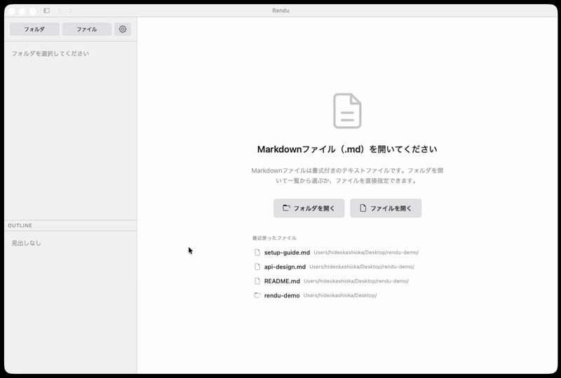

ファイルをドラッグするだけで読める、無料の軽量リーダー。
設定不要、アカウント不要ですぐ使えます。
Rendu はフランス語で「仕上げられたもの」「手渡されたもの」を意味する。建築家が設計の意図を伝えるために描く完成予想図（rendu）になぞらえ、マークダウンという設計図を、直感的に伝わる美しい形へ返すためのビューワー。
または: brew install --cask kashioka/tap/rendu · Fedora/RHEL 用 .rpm · 任意 distro 用 AppImage

フォルダを開いて、ファイルをクリック。それだけ。
「読む」に特化した、唯一のビューア。
| Rendu | Obsidian | Typora | VS Code | |
|---|---|---|---|---|
| 瞬時に起動 | Yes | 遅い | 普通 | 遅い |
| 設定不要 | Yes | プラグイン必要 | 少し必要 | 拡張機能必要 |
| 完全無料 | Yes | 一部有料 | $15 | Yes |
| 閲覧専用 | Yes | エディタ | エディタ | エディタ |
| Mermaid 図表 | 標準搭載 | プラグイン | プラグイン | 拡張機能 |
| 軽量・ネイティブ | ネイティブ ~6 MB | ~500 MB | ~100 MB | ~400 MB |
フォルダを開くだけ。すぐ読める。
フォルダを開くと .md ファイルをツリー表示。クリックですぐプレビュー。D&D にも対応。
テーマ切替やカスタムカラー設定に対応。いつでも快適に読める。
ワンクリックで A4 PDF にエクスポート。整形済みドキュメントをそのまま共有。
見出し一覧をサイドバーに表示。クリックでジャンプ。
コードブロックのコピーボタンをクリック。プロジェクトにそのまま貼り付け。
最近開いたファイルにすぐ戻れる。履歴は自動で保存。
必要なツールは、最初から入っている。
フローチャート、シーケンス図、ER 図、ガントチャートをインライン描画。
190 以上の言語を自動検出してハイライト表示。
テーブル、タスクリスト、取り消し線、オートリンク — GitHub Flavored Markdown に完全対応。
rendu file.md でターミナルから直接起動。Homebrew でインストール（macOS）。
Finder や Explorer で .md ファイルをダブルクリックすると Rendu で直接開く。
Tauri 2.0 + Rust で構築。ネイティブインストーラ 15 MB 以下。Electron の重さはなし。
無料・オープンソース。数秒で使い始められます。
または: brew install --cask kashioka/tap/rendu · Fedora/RHEL 用 .rpm · 任意 distro 用 AppImage